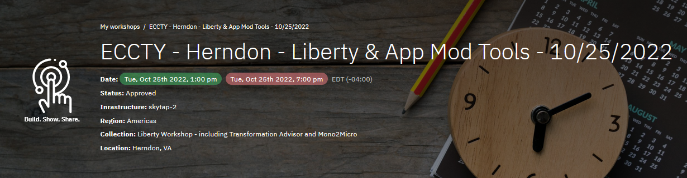
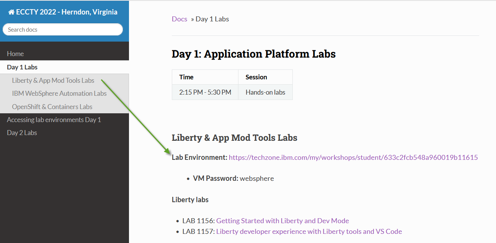

Day 1: Accessing lab environment

-
Go to the Attendee Lab URL from the Day 1 Labs menu item,
From the Day 1 Labs menu item, select the Lab Environment URL for the specific lab(s) you want to run

-
Enter the workshop password: websphere

-
The VMs will be shown, and should already be STARTED
DO NOT start / stop VMs unless instructed to do so!

You will see a screen with one or more VMs, depending on the specific lab.
-
Follow the lab guide for instructions for accessing the specific VM, credentials, etc.
Note: The lab guides include the information for which VM to open, how to login to the VM, login credentials, etc.